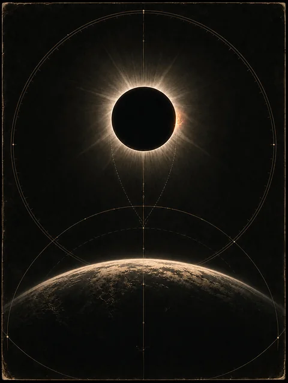

Free · PDFEight-page PDF · ready now
Eclipse Field Guide
Keep the field notes.
UK times, ISO 12312-2 safety, western-horizon fieldcraft, observation pages and a clearly labelled reflection page. Computed astronomy, not generic sign writing.